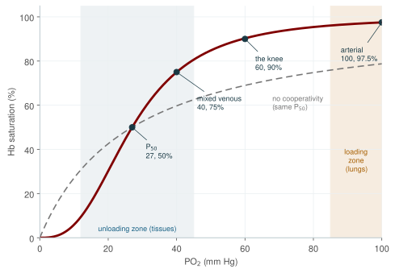
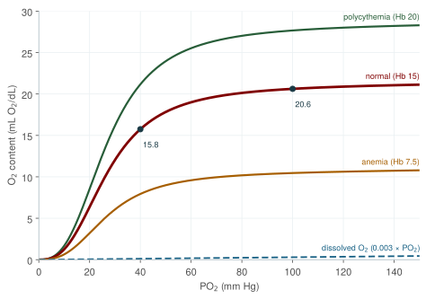
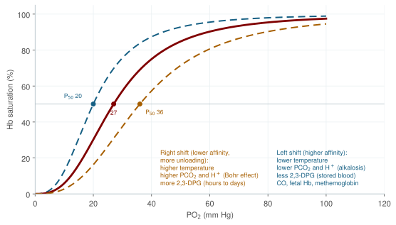
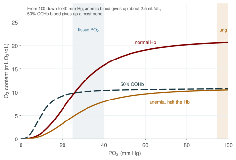
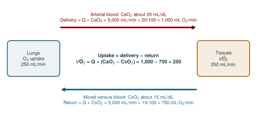
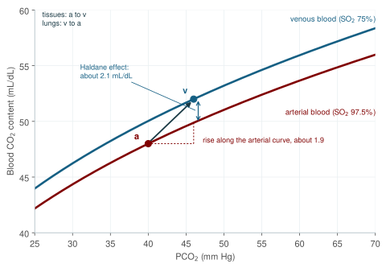

25 Transport of O2 and CO2 in the Blood
Hemoglobin, O2 content and delivery, and how the blood carries CO2
- Explain why dissolved O2 cannot meet the body’s demand.
- Read the HbO2 dissociation curve and know its anchor points.
- Calculate O2 content and O2 delivery.
- Predict what shifts the HbO2 curve, which way, and why it matters.
- Use the Fick principle to relate V̇O2, cardiac output and the arteriovenous O2 difference.
- Explain how CO2 is carried in blood and what the Haldane effect does.
Names, dates and the exact values in figure captions are context, not things to memorize. The anchor points and the O2 content equation are worth knowing cold.
Alveolar Ventilation brought O2 to the alveolus at a PO2 of about 100 mm Hg: 0.21 × (760 − 47) ≈ 150, minus 40/0.8 = 50. Diffusion moved it into the pulmonary capillary blood. This chapter follows it in the blood to the tissues, then follows CO2 back from the tissues to the lungs.
Keep one question in mind. A patient with heart failure and normal lungs has a PaO2 of 100 mm Hg. We give O2 and the PaO2 rises to 200. How much more O2 reaches the tissues? The answer comes in the section on O2 content.
25.1 The loop
Blood leaves the lungs with a PO2 of about 100, gives O2 to the tissues, and returns with a PO2 of about 40. Arterial blood has an O2 content CaO2, and mixed venous blood, returning to the lungs, has a content CvO2. Content is measured in mL of O2 per dL of blood, a volume of gas per volume of blood, which is awkward units but the ones everyone uses. The tissues take up O2 at a rate V̇O2 and give off CO2 at a rate V̇CO2, both in mL/min, and Q is the cardiac output. At steady state the lungs take up exactly as much O2 as the tissues use, and give off exactly as much CO2 as the tissues make.
Keep the sizes straight. At rest, cardiac output is about 5 L/min and minute ventilation about 6 to 7.5 L/min, flows of blood and of air. V̇O2 is much smaller, about 250 mL/min, and V̇CO2 about 200 mL/min. V̇O2 and V̇CO2 are gas exchange rates, not ventilation.
Arterial PO2 is a little lower than end-capillary PO2, about 95, because a small amount of blood bypasses gas exchange (bronchial and thebesian veins) and because ventilation and perfusion are not perfectly matched. That gap is the A–a gradient, and the Ventilation and Perfusion chapter covers it. In this chapter, round arterial PO2 to 100.
25.2 Dissolved O2 is not enough
Henry’s law says the concentration of a gas dissolved in a liquid is its solubility times its partial pressure:
\[[O_2]_{dissolved} = 0.003\ \frac{\text{mL O}_2}{\text{dL} \cdot \text{mm Hg}} \times P_{O_2}\]
At a PaO2 of 100 only 0.3 mL/dL is dissolved. (The small group keys use 0.0031. The difference does not matter.) The amount dissolved depends only on the partial pressure, not on how much gas the liquid touches. Dissolved O2 is also the only O2 that sets the PO2 and drives diffusion; O2 bound to hemoglobin does not count toward PO2.
Delivery of dissolved O2 is cardiac output times dissolved content:
- At rest: 5,000 mL/min × 0.3 mL/100 mL = 15 mL O2/min
- In heavy exercise, at a cardiac output of 25 L/min: 75 mL O2/min
A resting 70 kg person uses about 250 mL O2/min. One of the highest V̇O2max values ever reported, the cross-country skier Bjørn Dæhlie’s 96 mL/kg/min, is about 6,700 mL/min at 70 kg. Dissolved O2 cannot cover even resting needs. We need a carrier.
25.3 Hemoglobin
Adult hemoglobin (HbA) is a tetramer of two α and two β globin chains, each holding a heme group with a ferrous (Fe2+) iron. Each heme binds one O2, so one hemoglobin molecule carries up to four, loosely and reversibly. At a hemoglobin concentration of 15 g/dL, blood carries about 20 mL O2/dL bound to hemoglobin, roughly 65 times the dissolved amount.
25.3.1 The HbO2 dissociation curve
The O2-hemoglobin dissociation curve plots the percentage of heme sites occupied by O2 (saturation) against PO2 (Figure 25.1). It is sigmoid because binding is cooperative. Hemoglobin with no O2 is in the tense (T) state, with a low affinity. Each O2 that binds moves the molecule toward the relaxed (R) state and raises the affinity of the hemes still empty.

Cooperativity shows most in the steep middle of the curve, about 10 to 40 mm Hg, where molecules are switching from T to R, so a small change in PO2 moves many molecules between nearly empty and nearly full. On the flat top almost every molecule is already full, so a big change in PO2 barely changes saturation. Compare the dashed curve, a protein with the same P50 and no cooperativity. At 100 mm Hg, hemoglobin is about 98% saturated and the non-cooperative protein only about 79%. From 100 down to 20 mm Hg (exercising muscle), hemoglobin gives up about 67 points of saturation and the non-cooperative protein about 36. Cooperativity buys two things: hemoglobin stays nearly full in the lung even if PAO2 falls a fair amount, and tissue can take a lot of O2 for a small fall in PO2.
Myoglobin, the O2-binding protein of muscle, has one heme and no cooperativity. Its curve is hyperbolic with a P50 near 3 mm Hg, so it holds its O2 until muscle PO2 is very low.
The loading zone (lungs, PO2 about 100). The curve is flat. PaO2 can fall from 100 to about 60 while saturation only drops from 97.5% to 90%, so content is largely kept. That is why moderate altitude is well tolerated.
The unloading zone (tissues, PO2 about 40 and below). The curve is steep. Resting mixed venous blood sits at the top of this zone (40 mm Hg, 75%). Exercising muscle pulls PO2 down to 20 mm Hg or lower, deep into the steep part, and hemoglobin gives up much more.
25.3.2 The anchor points
| PO2 (mm Hg) | Saturation | Where |
|---|---|---|
| 100 | 97.5% | Arterial blood |
| 60 | 90% | The knee |
| 40 | 75% | Mixed venous blood at rest |
| 27 | 50% | P50 |
Above the knee you can lose a lot of PO2 without losing much saturation: PaO2 can fall from 100 to 60 and a pulse oximeter barely moves. Below it, saturation and content fall quickly. Clinicians watch 90% for that reason. During a difficult intubation the oximeter can sit in the 90s for minutes, and once it reaches the knee it can drop into the 80s within about 30 seconds.
P50, the PO2 at which hemoglobin is half saturated, is the standard index of affinity. A higher P50 means a lower affinity and a curve shifted to the right.
25.4 O2 content
Arterial O2 content is the O2 bound to hemoglobin plus the O2 dissolved in plasma:
\[C_{aO_2} = (1.39 \times \text{Hb} \times S_{aO_2}) + (0.003 \times P_{aO_2})\]
Know this equation. 1.39 is the mL of O2 carried by 1 g of fully saturated hemoglobin. Hb is in g/dL and SaO2 is a fraction, so the first term comes out in mL O2/dL, the same units as the dissolved term.
With Hb 15 g/dL, SaO2 0.97 and PaO2 100:
\[C_{aO_2} = (1.39 \times 15 \times 0.97) + (0.003 \times 100) = 20.2 + 0.3 \approx 20.5\ \text{mL/dL}\]
The dissolved part is a rounding error. Hemoglobin carries the O2.
Back to the opening question. Raising PaO2 from 100 to 200 adds 0.3 mL/dL of dissolved O2, and saturation can only rise from about 97.5% to 100%. Content goes from about 20.6 (at 97.5%) to about 21.4 mL/dL, about 4%. For a patient with normal lungs and a low cardiac output, O2 helps a little. The real gains come from cardiac output or hemoglobin.
Some texts use 1.34 or 1.36 mL O2/g in place of 1.39, and the small group keys use 0.0031 for the dissolved O2 coefficient. This course uses 1.39 and 0.003. The differences change a content by less than 1 mL/dL. The Small Group 2 key, Case 2, says “normal CaO2 is about 20.1”; with its own Case 1 numbers (SaO2 100%) it is about 21. Either way, a normal CaO2 is about 20 mL/dL.
25.4.1 Content curves show what saturation curves hide
Plot content instead of saturation and you get a curve of the same shape, scaled by hemoglobin (Figure 25.2). The dissolved line, 0.003 × PO2, barely shows at normal PO2. Above 100 mm Hg it is the only part still rising.

Anemia lowers the plateau and polycythemia raises it, while the saturation curve is the same in both. Small Group 2 uses this in its teaching case of a climber at 8,400 m on Everest (PB 272; the Diffusion chapter compares him with the measured climbers at the same camp). On his blood gas, SaO2 is 68% at a PaO2 of 30 mm Hg. With a normal hemoglobin his content would be 1.39 × 15 × 0.68 + 0.003 × 30 ≈ 14.3 mL/dL. Over weeks at altitude his hemoglobin has risen to 20.2 g/dL, and his content is 1.39 × 20.2 × 0.68 + 0.09 ≈ 19.2 mL/dL, nearly normal despite a very low saturation. Polycythemia defends content; it cannot change saturation.
Methemoglobin, in which the heme iron has been oxidized from Fe2+ to Fe3+ (spontaneously or by drugs such as nitrites), cannot bind O2, and it shifts the curve of the remaining hemoglobin to the left. An enzyme in red cells, methemoglobin reductase, normally keeps it near 1%.
25.5 What shifts the curve
The curve is not fixed. Conditions in the blood change hemoglobin’s affinity for O2 (Figure 25.3).

A right shift (higher P50, lower affinity, more unloading at a given PO2) comes from:
- a higher temperature;
- a higher PCO2 and a higher H+ concentration (lower pH), which together are the Bohr effect;
- more 2,3-diphosphoglycerate (2,3-DPG) in the red cell.
Working muscle is warm and makes CO2 and acid, so it has the first three. That is the point of the system: high metabolism promotes unloading where O2 is needed. Because the top of the curve is flat, a right shift costs little loading in the lung; the gain is on the steep part, in the tissues. Try it on Figure 25.3: at 100 mm Hg the shifted curves are close together, and at 20 to 40 mm Hg they are far apart.
2,3-DPG is made by glycolysis in the red cell and binds deoxygenated hemoglobin. It rises over hours to days with chronic hypoxemia (altitude, chronic lung disease) and with chronic anemia, which helps those patients unload O2. It falls in stored blood, so transfused red cells hold O2 tightly until they rebuild it.
A left shift (lower P50, higher affinity) comes from the reverse: lower temperature, lower PCO2 and H+ (alkalosis), less 2,3-DPG. Carbon monoxide, fetal hemoglobin and methemoglobin also shift the curve left. A left shift helps loading and hurts unloading. When you hyperventilate and feel lightheaded, the main reason is that a low PaCO2 constricts the brain’s arterioles and lowers its blood flow. The left shift from the alkalosis adds a little, because the brain’s blood gives up O2 less easily.
In a single bout of exercise the right shift comes from temperature, PCO2 and H+. 2,3-DPG does not rise meaningfully in one bout. It changes over hours to days, as at altitude, in anemia or in chronic lung disease.
Slide 15 is titled “Dissociation Curve - Bohr Effect” and lists temperature, pH, PCO2 and 2,3-DPG, and in lecture all four were called the Bohr effect. Strictly, the Bohr effect is the effect of PCO2 and H+ on O2 affinity, as the slide’s notes say. Temperature and 2,3-DPG also shift the curve right, but they are not the Bohr effect. This course uses the name the same way.
25.5.1 The curve at altitude
At altitude, hyperventilation starts within minutes, and the respiratory alkalosis it causes shifts the curve to the left first. That helps the blood load O2 in the lung at a low PAO2. Red cell 2,3-DPG then rises over hours to days, stimulated by the hypoxemia and by the alkalosis, and shifts the curve back to the right. At moderate altitude the two roughly cancel. At extreme altitude the alkalosis wins and the curve stays left of normal. The Small Group 2 climber shows it: at a pH of 7.55 his SaO2 is 68% at a PaO2 of 30, where a normal curve gives about 57%.
The Small Group 2 key (Case 1, polycythemia question) says that at moderate altitude the curve “initially shifts to the right due to 2,3-DPG” and then back to the left from the respiratory alkalosis. The order is the other way around, as described above: the alkalosis comes first, within minutes, and 2,3-DPG follows over hours to days.
25.6 Carbon monoxide
Carbon monoxide (CO) binds hemoglobin about 240 times more tightly than O2 does. Hemoglobin is half saturated with O2 at 27 mm Hg and half saturated with CO at about 0.1 mm Hg. Most of that affinity comes from CO leaving hemoglobin very slowly; it combines somewhat more slowly than O2 but lets go far more slowly still. That is why trace amounts are dangerous. Air with 0.1% CO has a PCO of about 0.7 mm Hg. Competing against an alveolar PO2 of 100, that is enough to put more than half the hemoglobin in the carboxy form (carboxyhemoglobin, COHb) once it reaches equilibrium, which takes hours.
CO harms O2 transport in two ways:
- It takes heme sites away from O2, so saturation and content fall.
- The hemoglobin that still carries O2 shifts left, so it gives up its O2 poorly in the tissues.
PaO2 stays normal, because PaO2 is dissolved O2 and CO does not change it, and the A–a gradient is normal too. The problem is tissue hypoxia from low content and poor unloading, not hypoxemia. A measured saturation (co-oximetry on an arterial sample) is low. A pulse oximeter can read falsely normal; you do not need the reason for this course.
Figure 25.4 compares 50% COHb with anemia at half the normal hemoglobin. Both have about half the normal O2 capacity. The anemic patient can walk around. A COHb of 50% is often fatal. The difference is the left shift: with CO, the O2 that is bound will not come off at tissue PO2.

CO binding is reversible. The COHb half-life is about 5 hours on room air, about 1 hour on 100% O2, and shorter still on hyperbaric O2. At very high PO2, dissolved O2 starts to count. Small Group 2 works this through for a man found confused in his car in a closed garage, with a PaO2 of 100 and a saturation of 50%:
- Room air: 1.39 × 15 × 0.50 + 0.003 × 100 ≈ 10.7 mL/dL
- 100% O2 in Chicago: PAO2 = (747 − 47) − 36/0.8 ≈ 655, using his PaCO2 of 36, and PaO2 is close to it: 10.4 + 2.0 ≈ 12.4 mL/dL
- Hyperbaric O2 at 3 atmospheres: PAO2 = (2,280 − 47) − 36/0.8 ≈ 2,190: 10.4 + 6.6 ≈ 17 mL/dL
His blood gas also shows a metabolic acidosis, from lactic acid made by hypoxic tissue.
The 2025 Transport notes (section X) say small amounts of CO “can cause major hypoxemia,” and the Small Group 2 key says the left shift causes decreased unloading “resulting in hypoperfusion.” CO causes tissue hypoxia with a normal PaO2, so it is not hypoxemia, and it does not reduce blood flow. Read “hypoxemia” and “hypoperfusion” in those places as tissue hypoxia. The notes’ section XXI says SaO2 is “falsely normal”; a measured SaO2 is low, and it is the pulse oximeter (SpO2), or a saturation calculated from PaO2, that can read falsely normal.
25.7 Venous O2, delivery and the Fick principle
The same content equation works for mixed venous blood. With PO2 40 and saturation 75%:
\[C_{vO_2} = (1.39 \times 15 \times 0.75) + (0.003 \times 40) = 15.6 + 0.12 \approx 15.8\ \text{mL/dL}\]
Arterial minus venous is about 20.5 − 15.8, roughly 5 mL/dL. At rest the tissues take about a quarter of the O2 delivered, and the other three quarters are a reserve.
| Arterial | Mixed venous | |
|---|---|---|
| PO2 (mm Hg) | 100 | 40 |
| Saturation | 97.5% | 75% |
| Content (mL/dL) | 20 | 15 |
Three flows, all in mL O2/min, describe the loop (Figure 25.5):
- Delivery (QO2 in the small groups) = Q × CaO2 = 5,000 mL/min × 20/100 ≈ 1,000
- Return = Q × CvO2 = 5,000 × 15/100 ≈ 750
- Uptake (V̇O2) = delivery − return ≈ 250

Uptake is delivery minus return, not delivery itself. Grouping the terms gives the Fick principle:
\[\dot{V}_{O_2} = (Q \times C_{aO_2}) - (Q \times C_{vO_2}) = Q \times (C_{aO_2} - C_{vO_2})\]
With the rounded values, 5,000 mL/min × 5 mL/100 mL = 250 mL O2/min. Rearranged, Q = V̇O2/(CaO2 − CvO2). Measure any two terms and you can solve for the third. Measure V̇O2 at the mouth, draw arterial and mixed venous blood, and you have the cardiac output. The cardiac catheterization lab and the exercise lab both use this. (This V̇O2 is the resting value, not V̇O2max.)
Read the equation the other way too. CvO2 falls when delivery falls (a low cardiac output, anemia, a low SaO2) or when consumption rises (fever, seizure, exercise). Either way the tissues extract more of what they get. That is the Small Group 3 patient in septic shock, with an SvO2 of 42%. Raising delivery or lowering consumption raises it again. The V/Q chapter shows why a low mixed venous O2 makes the hypoxemia from a shunt worse.
25.8 CO2 transport
CO2 diffuses from the tissue cells into the plasma and on into the red cell. It travels in three forms (Figure 25.6):
- Dissolved, in plasma and in the red cell. CO2 follows Henry’s law with a solubility of 0.067 mL/dL per mm Hg, more than 20 times that of O2, so at a PCO2 of 40 about 2.7 mL/dL is dissolved.
- As carbamino compounds. CO2 binds reversibly to the N-terminal amine groups of proteins, mostly the α and β chains of hemoglobin, not the heme: Hb–NH2 + CO2 ⇌ Hb–NH–COO− + H+. Deoxygenated hemoglobin forms carbamino compounds more readily than oxygenated hemoglobin.
- As bicarbonate. Inside the red cell, carbonic anhydrase speeds the hydration of CO2:
\[CO_2 + H_2O \rightleftharpoons H_2CO_3 \rightleftharpoons H^+ + HCO_3^-\]
The first step is slow in plasma, which has almost no carbonic anhydrase, and fast in the red cell. The second step is fast without help. Hemoglobin buffers the H+, and deoxygenated hemoglobin is the better buffer. The HCO3− leaves the red cell through an anion exchanger (band 3) in exchange for Cl−, the chloride shift. So most bicarbonate is made in red cells but carried in plasma. This is the same reaction that sets blood pH, which the Pulmonary Acid Base chapter builds on.
Blood carries about 48 mL/dL of CO2 at a PCO2 of 40, more than twice its O2 content.
The lecture’s percentages, 10% dissolved, 30% carbamino and 60% bicarbonate, are shares of the CO2 given off in the lung, the venous-arterial difference. They are not shares of the total CO2 in blood, which is mostly bicarbonate.
The table in the 2025 Transport notes (section XII) labels the 10, 30 and 60% column “% of Total CO2”, and the summary slide (slide 34) shows the same numbers without saying what they are a share of. They are shares of the CO2 exchanged in the lungs. Of the total CO2 in arterial blood, about 90% is bicarbonate, 5% carbamino and 5% dissolved.
25.9 The Haldane effect
The Haldane effect is the effect of O2 on CO2 carriage: at any PCO2, deoxygenated blood holds more CO2 than oxygenated blood. It is driven by O2 saturation, not by PCO2. It mirrors the Bohr effect:
- Bohr: CO2 and H+ change how hemoglobin binds O2.
- Haldane: O2 changes how blood carries CO2.
Two properties of deoxygenated hemoglobin cause it. It forms carbamino compounds more easily, and it buffers H+ better, which pulls the carbonic anhydrase reaction toward bicarbonate. So in a systemic capillary, as hemoglobin gives up O2 to the tissue, it takes up H+ and binds CO2, and more CO2 goes into bicarbonate. Unloading O2 makes room for CO2. In the lungs everything runs backward: loading O2 helps the blood give CO2 up.
Figure 25.7 shows two CO2 dissociation curves, one for arterial blood (saturation 97.5%) and one for venous blood (75%). Real blood moves from the arterial point a (PCO2 40, about 48 mL/dL) to the venous point v (PCO2 46, about 52 mL/dL). The path from a to v is steeper than either curve. Of the 4 mL/dL of CO2 the tissues add, about half comes from the rise in PCO2 along one curve and about half is the Haldane effect, the jump up to the venous curve as hemoglobin gives up O2. The Haldane effect is not a minor effect. Over this range the CO2 curve is steep and has no plateau, and the Haldane effect adds about as much again, which is why a 6 mm Hg change in PCO2 carries all the CO2 the body makes (4 mL/dL × 50 dL/min = 200 mL/min).

Clinically, when a patient with severe COPD who retains CO2 is given a lot of O2, PaCO2 can rise. Much of that is worse V/Q matching as O2 releases hypoxic vasoconstriction in poorly ventilated regions, part is the Haldane effect (fully saturated hemoglobin holds less CO2), and a small fall in ventilation contributes a little. Control of Ventilation returns to these patients.
Supplemental O2 does not lower PaCO2. PaCO2 is set by CO2 production and alveolar ventilation (PaCO2 ∝ V̇CO2/V̇A, from the ventilation chapter). The Haldane effect changes how CO2 is loaded and unloaded inside the blood, not how much the body makes or how much the lungs clear. In the COPD patient above, O2 raises PaCO2 because effective alveolar ventilation falls as V/Q matching worsens (more of each breath goes to units that exchange little), and because the Haldane effect raises blood PCO2 that a patient who cannot breathe more cannot clear. The equation still holds; what changed is V̇A.
25.10 The whole path of O2
The lecture closes on one chain from air to tissue. Each link is a lecture in this block, and when a patient is hypoxemic or O2 delivery is low, you can walk down it and ask which link failed.
- PB, FiO2 and PaCO2 set PAO2 (the alveolar gas equation; Alveolar Ventilation).
- Diffusion and V/Q matching set how close PaO2 gets to PAO2 (Diffusion; Ventilation and Perfusion).
- Hb, SaO2 and PaO2 set CaO2 (this chapter).
- O2 delivery = Q × CaO2, and the tissues take out V̇O2, leaving CvO2 (this chapter, with cardiac output from the cardiovascular block). Metabolic activity (temperature, physical activity, infection) sets V̇O2.
Most adult hemoglobin is HbA (α2β2). HbA2 (α2δ2) is about 2.5%, and fetal hemoglobin (α2γ2) is under 1% in adults. Glycated forms (HbA1a, A1b, A1c) form without an enzyme and irreversibly, at a rate set by blood glucose. A red cell lives about 120 days, so HbA1c reflects average glucose over the past 2 to 3 months, which is why it is checked in diabetes. HbA1c binds O2 a little more tightly, partly because it binds 2,3-DPG less well, but at 6 to 9% of total hemoglobin the effect on the whole curve is small.
Sickle hemoglobin (HbS) comes from a single amino acid substitution in the β chain: valine replaces glutamate at position 6. Oxygenated HbS is normally soluble, but deoxygenated HbS is much less soluble than HbA and polymerizes into long, stiff fibers that distort the red cell into the sickle shape. Sickled cells are fragile and block small vessels, which causes the pain and organ damage of a sickle cell crisis, and they hemolyze (lifetime under 20 days), which causes chronic hemolytic anemia. Sickle blood also has a right-shifted curve.
In anemia that develops over a long time, 2,3-DPG rises and shifts the curve to the right, so hemoglobin releases O2 to the tissues at a higher PO2. This happens only with chronic anemia, not with a sudden fall in hemoglobin.
25.11 Check your understanding
A patient’s oxygen saturation falls from 97.5% to 90%. Roughly how far has her PaO2 fallen? If her PaO2 then falls another 20 mm Hg, what happens to her saturation, and why is the second fall worse?
Answer
From about 100 to about 60 mm Hg: a 40 mm Hg fall for 7.5 points of saturation, because she was on the flat top of the curve. Another 20 mm Hg brings her to 40, where saturation is about 75%, a further 15 points. Below the knee the curve is steep, so each mm Hg costs much more saturation and content.
During a race, the blood in a leg muscle’s capillaries is warmer, has a higher PCO2 and a lower pH. Which way does the curve shift? Why does that help the muscle without costing much O2 in the lungs?
Answer
All three shift the curve to the right (higher P50, lower affinity), and the PCO2 and pH part is the Bohr effect. At the low PO2 in working muscle, on the steep part of the curve, a right-shifted curve gives up much more O2. In the lungs, blood is cooler and has a lower PCO2 and a higher pH, so it is back near the normal curve, and on the flat top even a right-shifted curve stays nearly saturated.
A patient receives several units of blood that has been stored for weeks. Which way is the transfused blood’s curve shifted, why, and what does that mean for the tissues over the first hours?
Answer
To the left, because 2,3-DPG falls in stored red cells. The transfused hemoglobin loads O2 normally in the lungs but holds it more tightly at tissue PO2, so it unloads less until the cells rebuild their 2,3-DPG, which takes hours to days.
A patient with a hemoglobin of 10 g/dL receives a transfusion of fresh red cells that raises it to 13 g/dL. Her lungs and her cardiac output (5 L/min) do not change. Which way do her PaO2, SaO2, CaO2 and O2 delivery move, and by roughly how much?
Answer
PaO2 does not change. It reflects the dissolved O2, which depends on the alveolar gas and the lung, not on hemoglobin, so it stays about 100 mm Hg. SaO2 does not change either: saturation depends on PO2 and on hemoglobin’s affinity, not on how much hemoglobin there is, so it stays about 97%. CaO2 rises with the bound term, from about (1.39 × 10 × 0.97) + 0.3 ≈ 13.8 to (1.39 × 13 × 0.97) + 0.3 ≈ 17.8 mL/dL, close to a 30% rise. Delivery = Q × CaO2, so at 5 L/min it rises from about 690 to about 890 mL O2/min.
A patient’s cardiac output falls by half while his V̇O2 stays the same. Using the Fick principle, what happens to the arteriovenous O2 difference and to his mixed venous saturation?
Answer
V̇O2 = Q × (CaO2 − CvO2). If Q halves and V̇O2 is unchanged, the arteriovenous difference must double, from about 5 to about 10 mL/dL. With CaO2 unchanged at 20, CvO2 falls to about 10 mL/dL, and mixed venous saturation falls from 75% to about 50%. The tissues compensate by extracting more of the O2 they are given.
Carbamino compounds are only about 5% of the CO2 in arterial blood but about 30% of the CO2 given off in the lungs. Explain the difference.
Answer
The 5% is a share of the total CO2 carried, and the 30% is a share of the small amount exchanged between venous and arterial blood (about 4 mL/dL). Deoxygenated hemoglobin forms carbamino compounds much more readily than oxygenated hemoglobin, so carbamino CO2 changes a lot as blood gives up O2 in the tissues and takes it up in the lungs. That is part of the Haldane effect.
25.12 Key equations
| Equation | Use |
|---|---|
| [O2]dissolved = 0.003 × PO2 | Henry’s law; 0.3 mL/dL at a PO2 of 100 |
| CaO2 = (1.39 × Hb × SaO2) + (0.003 × PaO2) | O2 content; about 20 mL/dL arterial, 15 mL/dL mixed venous |
| O2 delivery (QO2) = Q × CaO2 | About 1,000 mL O2/min at rest |
| V̇O2 = Q × (CaO2 − CvO2) | Fick principle; about 250 mL O2/min at rest |
| Q = V̇O2/(CaO2 − CvO2) | Cardiac output by the Fick principle |
| CO2 + H2O ⇌ H2CO3 ⇌ H+ + HCO3− | Bicarbonate formation; carbonic anhydrase in the red cell |
| Anchor points: 100/97.5%, 60/90%, 40/75%, 27/50% | The HbO2 curve |
25.13 Sources
This chapter follows the 2026 Transport of O2 and CO2 in the Blood lecture for MEDC 30504 and draws on the Transport notes, Small Groups 2 and 3, and the course’s 2018 transport notes, corrected and updated. All figures were drawn for this book.